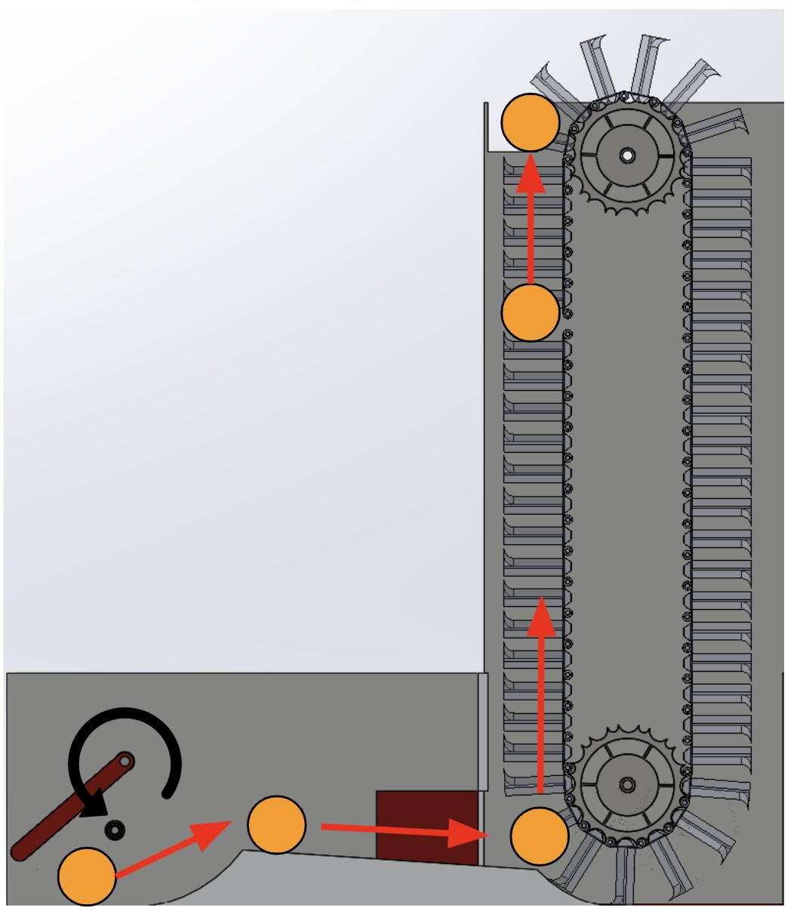
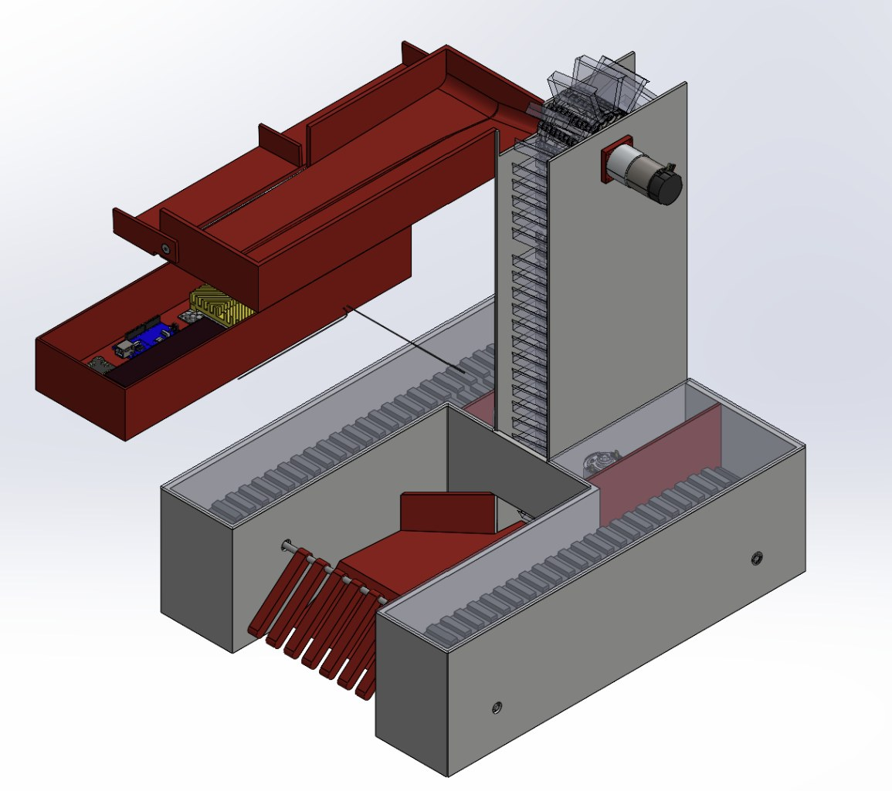
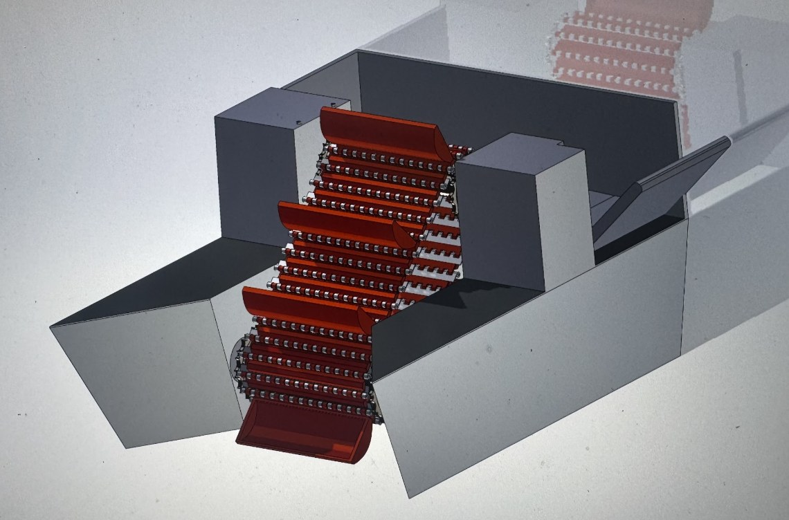
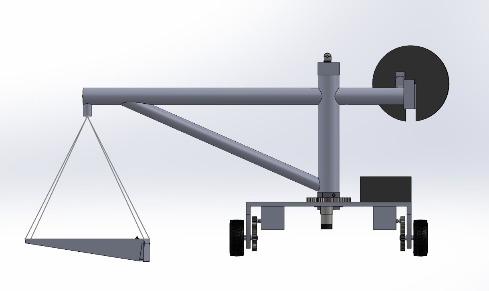
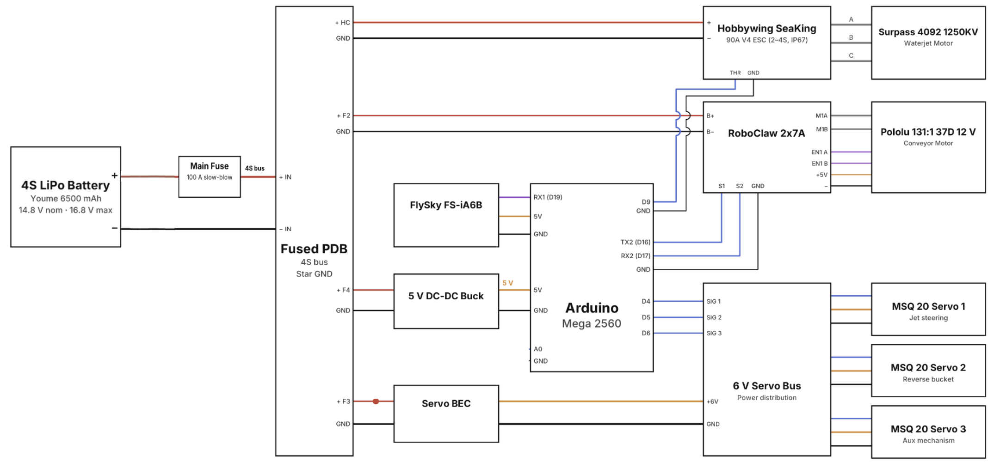

ME 72 is the capstone of Caltech's mechanical engineering program and a tradition that goes back more than four decades: every year, teams design and build robots from scratch and compete head-to-head on campus. This year's contest is the Dredge Challenge. My team has $1,400 to build three robots that recover floating and sunken golf balls from Caltech Hall Pond and deliver them to a dry dock on the walkway above. The competition is in March 2027.
We split the job across three robots. Stuart is a surface boat with a welded aluminum hull, powered by a waterjet with a reverse bucket, that sweeps up floating balls with an angled conveyor. Kevin is a partially submerged, tread-driven robot that scoops sunken balls off the pond bottom and carries them up a conveyor. Bob is a crane robot on the walkway that uses a winch and basket to lift the collected balls out of the water and into the dry dock.
Since October, we've taken all three robots through a preliminary design review and a critical design review, which meant fully fleshing out the CAD, manufacturing plans, bill of materials, electrical schematics, and motor sizing. As one of the team's electronics leads, I've chosen components and laid out the power and control systems. I've also spent much of my time developing the conveyor mechanism that picks up the balls and building our early CAD models.
Next up is building, testing, and a lot of time in the pond. I'll keep updating this page as the robots come together.




Dredge Challenge rules
The official ME 72 competition rulebook for 2026–27.
Read the rules (PDF)ME 72 Through the Years
Curious what competition day actually looks like? Here's a look back at some past ME 72 contests, all the way back to 1991.